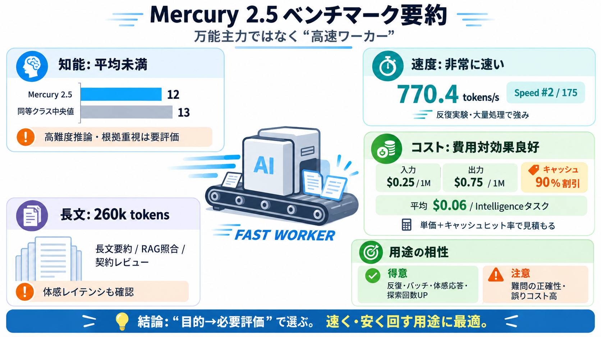

Mercury 2.5 Review: Fastest Model for Latency Sensitive ...
## FAQ When was Mercury 2.5 released? Inception announced Mercury 2.5 in September 2026. A preview version, listed sepa…

Mercury 2.5は「知能（Intelligence Index）が平均未満」になりやすい一方で、出力速度と運用コストに強みがあるモデルです。最適は“万能主力”ではなく“高速ワーカー”の用途です。
Artificial Analysis Intelligence Indexは12で、同等クラスの中央値13を下回ります。難度の高い推論・知識・根拠重視では、上位モデルのほうが期待値を上げやすい可能性があります。
Mercury 2.5
12
統合指標（平均傾向）
中央値（同等クラス）
13
上振れには届きにくい
出力トークン速度は770.4 tokens/秒で、Speedランキングは#2 / 175です。反復実験や大量処理など「回転数（throughput）」が効く運用で優位になりやすいです。
出力速度
770.4
tokens/秒
順位
#2 / 175
Speedランキング上位
入力は$0.25/1M tokens、出力は$0.75/1M tokensで“極端に安い”わけではありません。ですがキャッシュディスカウント90%と、Intelligenceタスク1回あたりの平均コスト$0.06が示され、費用対効果は相対的に良好です。
入力単価
$0.25
/ 1M tokens
出力単価
$0.75
/ 1M tokens
キャッシュ
90%
割引
Intelligenceタスク平均コスト
$0.06（提示値）
読みどころ
キャッシュが効く設計ほど総費用が下がりやすい
コンテキストウィンドウは260kトークンと大きく、長文の入力・照合・要約に向きます。速度が速い点と組み合わさることで「情報量は多いがテンポも落としたくない」運用で強みになり得ます。
コンテキスト
260k
tokens（提示値）
向く用途（例）
長文要約 / RAG照合
契約・規約レビュー等
Mercury 2.5は「高精度で万能」より「十分な品質を前提に、速く・安く回す」方向に適合しやすい可能性が高いです。用途定義では“必要能力”がIntelligence Indexのどこに対応するかを優先します。
得意になりやすい
反復 / バッチ / 体感応答
探索回数を増やす運用
注意が要る
難問の正確性・根拠
誤りコストが高い領域
速度が速いモデルのメリットは、(1) 体感応答が速い、(2) 反復探索を増やせる、(3) バッチ処理を短時間で回せることです。特に“出力速度”が支配する設計ほど効果が出ます。
i
体感応答
ユーザー体験
ii
探索回数
プロンプト改善
iii
バッチ効率
運用コストに直結
## FAQ When was Mercury 2.5 released? Inception announced Mercury 2.5 in September 2026. A preview version, listed sepa…
A screenshot of the BenchLM model record for Mercury 2.5 (captured September 9, 2026), showing 'No public score yet' and…
The risk for Inception is that “fastest” is a claim every lab racing through September 2026’s model dump could contest w…
+ At launch, Mercury 2.5 is 80% off at $0.04 per million input and $0.15 per million output. Capabilities: Tunable reas…
### Artificial Analysis Intelligence Index v4.1.1 ### What's changed 𝜏³-Banking moved to upstream v1.0.1: The evaluat…
キャッシュディスカウント90%は、同一または類似した入力（プロンプトの大部分）を繰り返すほど効きます。RAGで共通文脈が多い、テンプレが固定、同一ドキュメント照合を繰り返す設計で効果が出やすいです。
効きやすい設計（例）
固定テンプレ + 共通文脈
RAG / 書式照合
効きにくい設計
毎回入力が大きく変化
キャッシュ率が下がる
Intelligence Indexが低い（12）からといって、実務で必ず失敗するとは限りません。Indexは評価群の平均傾向で、あなたの用途がその評価に近いかで結果が変わります。
Q1（本文）
“即失敗”ではない
用途適合が鍵
Q4（本文）
推論≠強い推論
“推論対応”と“強さ”は別
Intelligenceが平均未満になり得るため、難度の高い推論・知識・正確性が必要な場面ではリスクがあります。さらに提示抜粋だけでは、幻覚耐性や指示追従などの“全体像”が確定しません。
i
難問精度リスク
正確性が必要な場面
ii
検証不足
指標が網羅されない
iii
モダリティ不確実
画像等の仕様確認が必要
採用するなら、まず目的タスクに近い評価セットで事前PoCを行い、低Intelligence領域をガードする制約を組み合わせます。必要に応じて段階的推論や閾値による別モデルへのフォールバックを用意します。
(1) 確かめる
自社PoC / 評価セット
再現性の確認
(2) 守る
検証・制約・フォールバック
段階的推論 / 閾値
知能Indexは平均未満の可能性があるため、難度の高い正確性が最優先なら上位モデルも検討します。一方で、速度・コスト・長文コンテキストを活かし「十分品質を前提にスケール」させる戦略が合理的です。
Strength
Speed / Throughput
770.4 tokens/s
Economy
Cache前提で有利
キャッシュ90%
Trade-off
Intelligenceは慎重に
12 vs 13